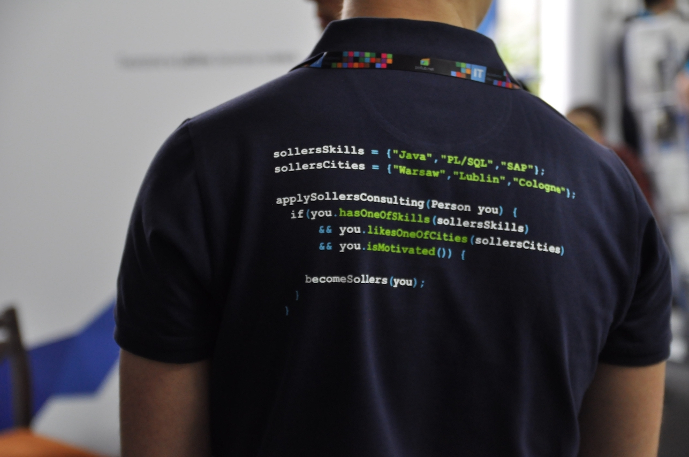
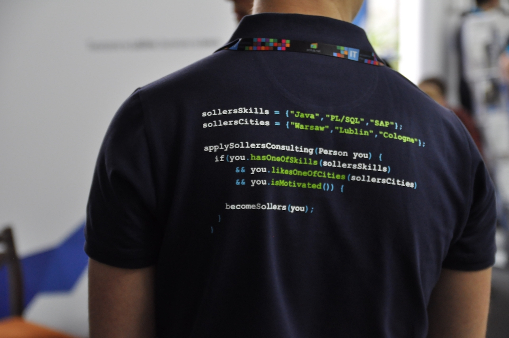
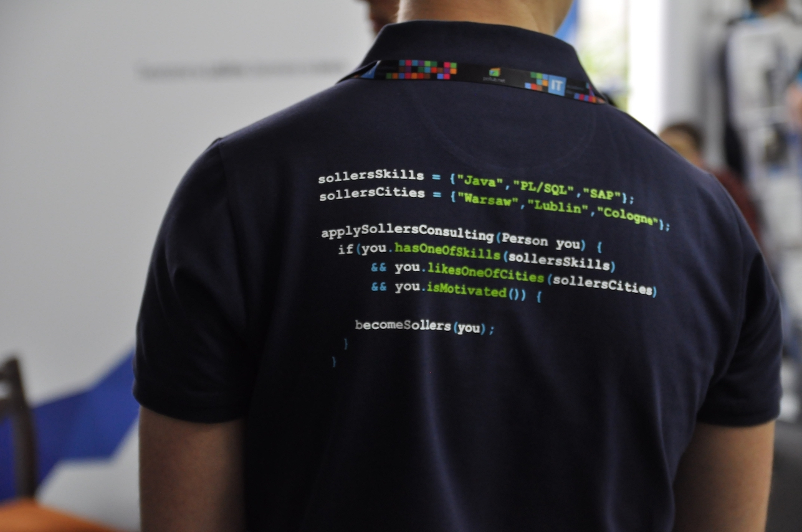
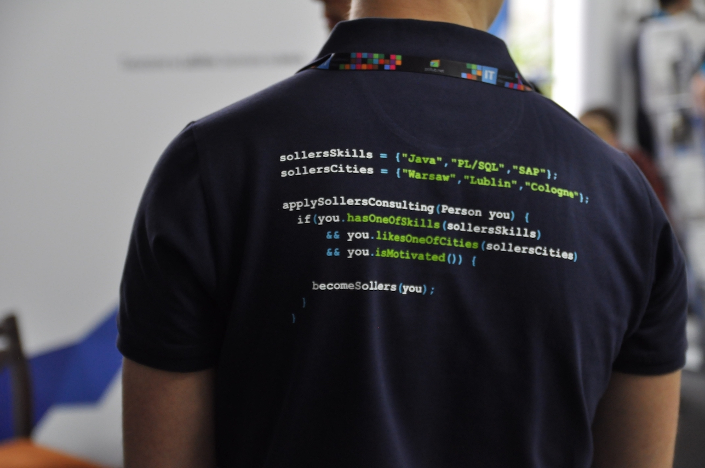

Galeria
 




IT Academic Day to największa, coroczna konferencja technologiczna organizowana przez studentów Politechniki
Lubelskiej z Grupy pollub.NET.
W tym roku spotykamy się 10 kwietnia na auli Wydziału Elektrotechniki i Informatyki. Udział w wydarzeniu
pozwoli uczestnikom na zdobycie wiedzy dotyczącej nowoczesnej technologii oraz zapoznanie się z możliwościami
rozwoju kariery w branży informatycznej. Zapewni to cykl prelekcji poprowadzonych przez specjalistów z lubelskiej
branży IT, które mają na celu zainspirować słuchaczy do zgłębiania swojej wiedzy i podjęcia wysiłku rozwijania
siebie i swoich umiejętności. Ponadto, oferujemy liczne atrakcje, konkursy z nagrodami oraz okazję do zobaczenia
nowoczesnego sprzętu i porozmawiania z przedstawicielami firm informatycznych.
Więcej informacji o agendzie, firmach, konkursach czy aktualnościach możecie znaleźć na Facebooku.
